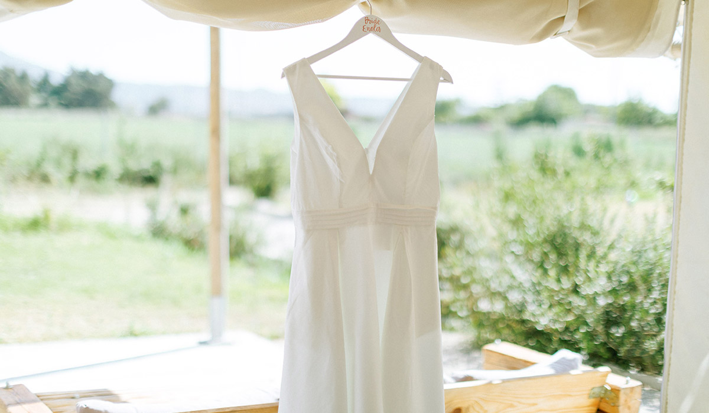
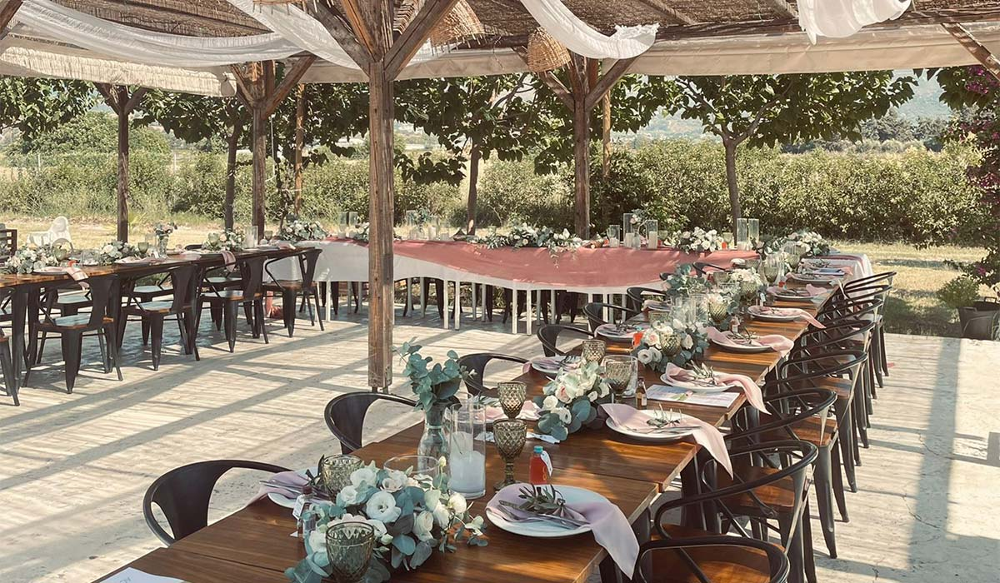

BBQ Package
Starters, salads, dips, breads, olives and feta, buffet-style or set on the tables. Mains of traditional souvlakis, sausages and gyros, with grilled vegetables, falafel and veggie souvlakis, followed by dessert.

Sails on Kos offers a unique and intimate setting for small destination weddings, retreats and special events, nestled amidst idyllic farmland with stunning views of Mount Dikeos.
With the option to book the entire resort, guests enjoy exclusive use of its twenty luxury tents, the spacious communal areas and the tranquil pool. The on-site restaurant tailors every detail — a wedding feast, a retreat meal plan or a special celebration.

Starters, salads, dips, breads, olives and feta, buffet-style or set on the tables. Mains of traditional souvlakis, sausages and gyros, with grilled vegetables, falafel and veggie souvlakis, followed by dessert.
A customisable option with elegant charcuterie boards, selected starters, mains and desserts — built around your day.
The full Greek table for a large gathering: the island's flavours with modern flair, served in the Taverna and on the terrace.
Menus and prices are quoted per event — talk to the family and the details will be built around your plans.